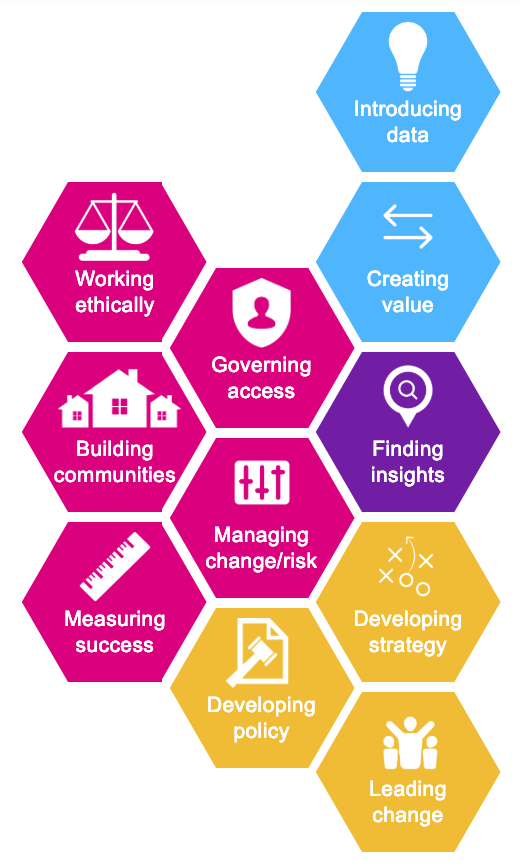

Chris
Chief executive with a strategic, whole-organisation view.
Chris needs to think and work strategically, knowing where to allocate money to achieve policy objectives. He lacks technology skills and needs to be persuaded of the benefits of using data for service delivery.
Goals
- The organisation operates within its budget
- Develop strategy and fulfill the organisation's mission
- Run the organisation effectively
- Ensure efficient services
- Get positive public feedback on services
- Keep external partnerships healthy
Needs to know
- How achievable a data project is for the organisation
- Success stories from comparable organisations about service improvement, costs and savings.
- What the broader benefits are
- What the relevant policies are
- Impact on the organisation's business models
Key ODI skills framework areas

Introductions
- Introducing data
- Creating value
- Finding insights
- Governing access
- Working ethically
- Building communities
- Managing change/risk
- Measuring success
- Developing policy
- Developing strategy
- Leading change
Pat
Policy officer, compliance.
Pat helps the organisation stay within the law while enabling services and projects to deliver.
Goals
- The organisation does not break the law
- Legal compliance procedures are routine across the organisation
- The organisation stays up to date with compliance and regulations
Needs to know
- How to evaluate the systems, tools and processes that are needed for data storage, cleaning and analysis
- Useful articles, blogs, tutorials and e-learning that can help staff understand common data concepts and tools
- What are my/the organisation’s responsibilities?
- Case studies showing costs and savings in time and money
Key ODI skills framework areas
Introductions
- Introducing data
- Classifying data
- Boosting usability
- Using platforms
- Governing access
- Working ethically
- Managing change/risk
- Developing policy
Sara
Service Delivery Manager and Budget Holder
Sara is responsible for the design of new services (via her resources being both personnel and budget) and needs to be able to demonstrate the process to others.
Goals
- Everyone supposed to be is served
- The service operates within budget and on time
- Risk is managed and minimised
- There are good relationships with internal and external stakeholders and service delivery partners
- Making sure the service funding continues by proving the need, showing evidence of delivery and controlling costs.
Needs to know
- How data use can save cost and improve service for the user
- What others have achieved using data - and how they have achieved it
- How to manage a data project
- How to manage risk
- The legal requirements of closed, shared and open data.
- Data ethics
- Which skills and technologies to prioritise with a limited budget
Key ODI skills framework areas
Introductions
- Introducing data
- Creating value
- Classifying data
- Governing access
- Working ethically
- Building communities
- Managing change/risk
- Measuring success
- Innovating with data
- Designing services
- Achieving sustainability
- Developing strategy